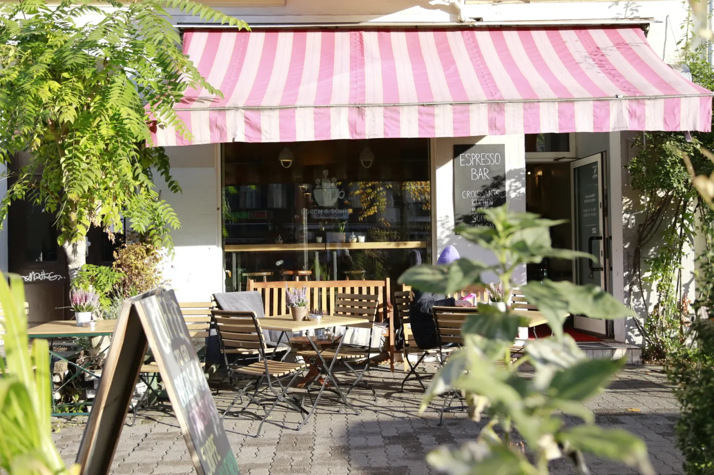
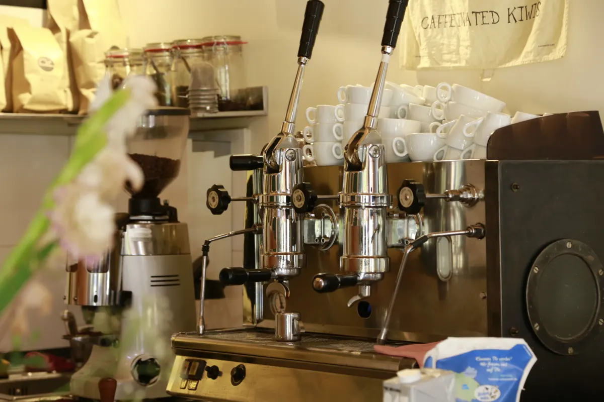
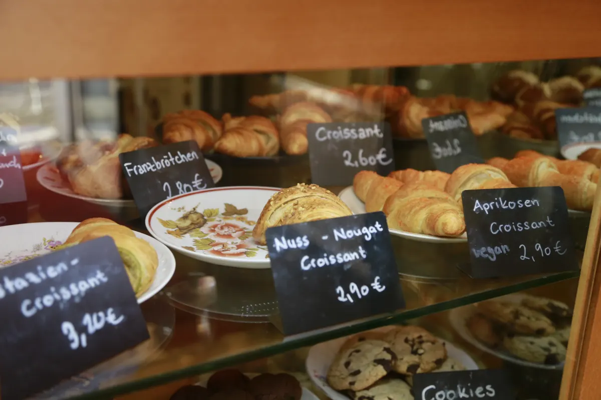
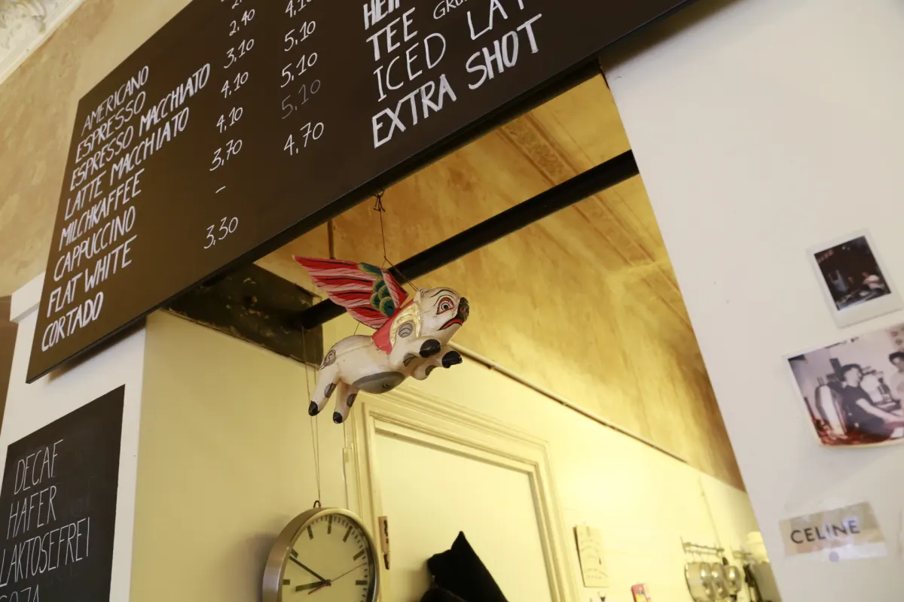
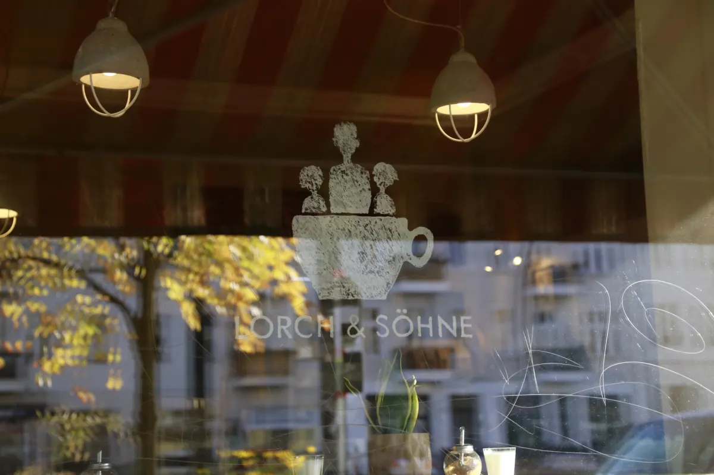
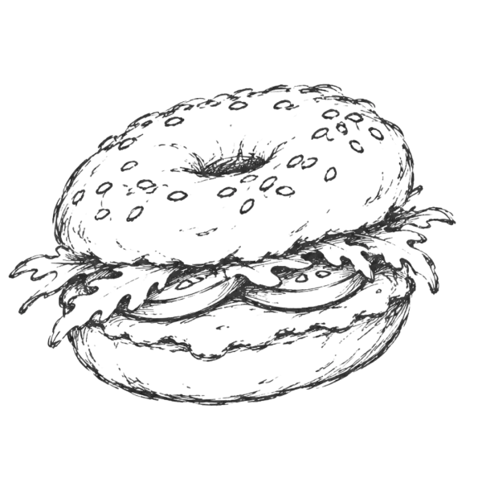
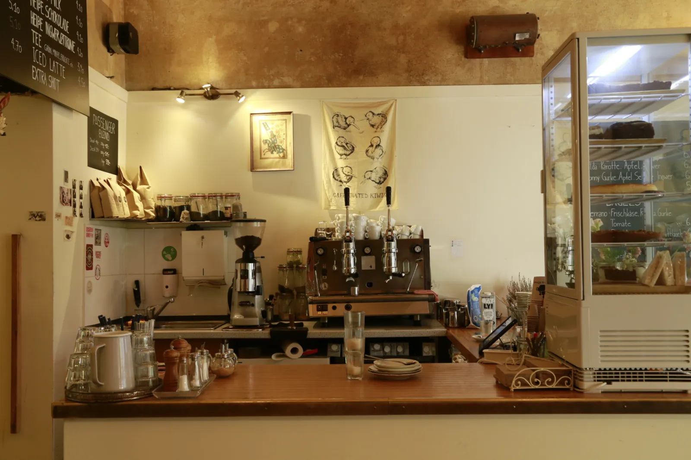

Seit 2015 · Prenzlauer Berg
Unser Café auf der Sonnenseite der Danziger Straße

Seit 2015 bekommst du bei uns auf der Danziger Straße richtig guten Espresso und Cappuccino, Frühstück, frisch belegte und getoastete Bagels, selbstgebackenen Kuchen und hausgemachte Suppen.
Drinnen sitzt du auf Barhockern und kannst den Baristas bei der Arbeit an der Espressomaschine zusehen. Draußen stehen die Tische in der Sonne, im Sommer unter blühenden Rosen. Hier kannst du in Ruhe frühstücken – zum Beispiel mit unseren Frühstücksklassikern, dem Kleinen, Großen oder Süßen Lorch –, ein Buch lesen oder einfach dem Treiben auf der Danziger Straße zusehen.
Jeden Tag liegen bei uns die Süddeutsche, der Tagesspiegel und die Zeit für dich bereit. Laptops bleiben bei uns lieber in der Tasche, und Video Calls machst du besser woanders. Wenn es doch mal sein muss, frag uns einfach.
Zur Karte






Lorch & Söhne · Danziger Straße
Unsere Karte

Kaffee
- Americanoeinfach: 2,90 €doppelt: 3,90 €
- Espressoeinfach: 2,40 €doppelt: 3,40 €
- Espresso Macchiatoeinfach: 3,10 €doppelt: 4,10 €
- Latte Macchiatoeinfach: 4,10 €doppelt: 5,10 €
- Milchkaffeeeinfach: 4,10 €doppelt: 5,10 €
- Cappuccinoeinfach: 3,70 €doppelt: 5,10 €
- Flat Whiteeinfach: gibt es nichtdoppelt: 4,70 €
- Cortadoeinfach: 3,30 €doppelt: gibt es nicht
Andere Getränke
- Matcha Latte4,10 €
- Chai Latte4,10 €
- Golden Milk4,10 €
- Heiße Schokolade4,10 €
- Heiße Ingwer-Zitrone4,20 €
- Tee3,10 €Grün, Minze, Früchte u. a.
- Iced Latte4,50 €
- Extra Shot1,00 €
Entkoffeiniert oder mit Hafer-, Soja- oder laktosefreier Milch: + 0,30 €.

Findest du mich im Café?
Frische Säfte
- Kate6,10 €Orange, Karotte, Ingwer
- Lilo6,10 €Apfel, Orange, Kurkuma
- Tilda6,10 €Karotte, Apfel, Ingwer
- Conny6,10 €Gurke, Apfel, Sellerie, Ingwer
- Orange pur5,80 €

Frühstück
- Kleiner Lorch8,80 €Schinken (1), Käse (2), Paste (1), Butter, Brot und Brötchen
- Großer Lorch11,80 €Schinken (1), Käse (3), Paste (3), Butter, Brot und Brötchen
- Süßer Lorch4,30 €Croissant, Marmelade, Butter
- Eier im Glas7,50 €zwei Bio-Eier, Senf, Butter, Schnittlauch, Brot
- Bircher Müsli groß6,80 €Joghurt, frische Beeren, Nüsse
- Bircher Müsli klein4,80 €Joghurt, frische Beeren, Nüsse

Bagels
Handgemachte Bagels von Salomon Bagels aus Berlin, bei uns frisch belegt und getoastet.
- Serrano6,80 €Frischkäse, Rucola, Gurke, Tomate
- Lachs6,80 €Frischkäse, Rucola, Schnittlauch
- Käse6,40 €Frischkäse, Rucola, Gurke, Tomate
- Vegi6,40 €Rucola, Gurke, Tomate, Rote Beete, Avocado, mit Hummus oder Frischkäse
- Italiano6,40 €Mozzarella, Frischkäse, Rucola, Tomate, Pesto
- Süß4,80 €Frischkäse, Marmelade
- Nur Frischkäse4,00 €

Selbstgebackener Kuchen
Was es gibt, wechselt. Frag einfach nach dem heutigen Kuchen.

Hausgemachte Suppen
- Daal8,80 €
- Kartoffel8,80 €
- Huhn9,50 €
- Kleine Portion6,00 €
- + Wiener1,00 €
Allergene? Sprecht uns an!


Lorch & Söhne · Danziger Straße
Komm vorbei!
Danziger Straße 2510435 Berlin · Prenzlauer Berg
Öffnungszeiten
- Montag–Freitag
- 08:00–17:00 Uhr
- Samstag–Sonntag
- 09:00–17:00 Uhr
Anreise
Mit der Tram M10 bis Husemannstraße, von dort sind es nur wenige Schritte. Oder mit der U2 bis Eberswalder Straße und zu Fuß die Danziger Straße entlang.
Route planen